Ростислав Сергеев
Системы мониторинга и управления кабельными соединениями в реальном времени (Real Time Cable Management Systems - RTCMS) появились достаточно давно. Их разработка началась около десяти лет назад, а на рынке их стали предлагать во второй половине 90-х гг. Пионером в области таких "интеллектуальных" СКС была компания RiT Technologies (http://www.rittech.com) с аппаратно-программными комплексами PatchView, в которых использовались специальные коммутационные панели и шнуры. Аналогичное, но по-другому реализованное решение, также базирующееся на фирменных коммутационных панелях со светодиодными индикаторами и датчиками, чуть позже предложила компания Avaya (http://www.avaya.com). И, наконец, компания iTRACS (http://www.itracs.com, прежнее название - Cablesoft) разработала еще один тип решения, в котором используются специальные модули с сенсорами, монтирующиеся на стандартные коммутационные панели, а также коммутационные шнуры с разъемами оригинальной конструкции. В отличие от первых двух фирм, iTRACS не производит СКС, и хотя система была разработана в конце 90-х гг. прошлого века, она начала использоваться (в рамках стратегического партнерства) с СКС компаний Tyco Electronics (AMP Netconnect), Molex PN и других перечисленных в таблице фирм только 2-3 года назад. Если продукты RiT и Avaya рассчитаны главным образом на новые инсталляции, то система iTRACS может устанавливаться на уже смонтированную СКС. В настоящее время решения RiT и iTRACS поставляются в составе продуктов почти десятка производителей СКС (см. таблицу).
"Интеллектуальные" СКС
| Поставщик СКС | Разработчик решения RTCMS | Торговая марка продукта |
| Tyco International | iTRACS | AMPTRAC |
| ITT NS&S | iTRACS | LANSense |
| Molex PN | iTRACS | Real-Time |
| Ortronics | iTRACS | Clarity |
| Avaya | Avaya | iPatch |
| RiT | RiT | PatchView |
| Panduit | RiT | PanView |
| Nordx/CDT | RiT | intelliMAC |
| Brand-Rex | RiT | SmartPatch |
Необходимость подобных систем в крупных проектах (более 1000 портов) уже никем не оспаривается. Фактически подобные системы автоматизируют ведение системного журнала коммутаций, немедленно и без ошибок, свойственных людям, занося все изменения в кабельном хозяйстве в соответствующую базу данных. При этом не только экономятся время и нервы системного администратора и автоматизируется его рутинная работа, но и заметно повышается надежность функционирования корпоративной сети. Ведь СКС, по сути, самая распределенная часть корпоративной информационной среды, наиболее сложная в управлении. По данным различных исследований, до 70% проблем в корпоративных сетях связано с физическими соединениями, при этом 80% времени простоя занимает поиск неисправности и только 20% - ее устранение.
Потенциальные клиенты RTCMS - это в первую очередь владельцы крупных и средних сетей со сложной топологией и территориальным распределением, организации, критичные к простоям сетей (финансы, транспорт, связь) или с часто меняющимися конфигурациями систем (бизнес-центры, пресс-центры), а также организации с повышенными требованиями к безопасности.
Общие черты
Все интеллектуальные СКС состоят из сходных компонентов - интеллектуальные коммутационные панели, устройства для сбора информации о соединениях (сканеры или анализаторы) и соответствующее ПО. Как правило, используются специальные коммутационные шнуры и другие вспомогательные аксессуары.
Принцип действия всех систем тоже по сути одинаков: они регистрируют физическое замыкание контактов; кроме того, порты на коммутационных панелях регулярно или по специальной команде администратора опрашиваются. Затем данные о соединениях передаются на центральное устройство сбора информации, подключенное к станции управления сетью (ПК системного администратора), где обрабатываются с помощью специального ПО.
Как правило, RTCMS допускают интеграцию в системы управления сетями (NMS), такие, как HP OpenView или CA Unicenter, работающие на более высоких уровнях модели OSI. Такие NMS, обладая, несомненно, большей универсальностью, обычно работают с логическими именами и не оперируют с физическими параметрами устройств и помещений, а также не способны информировать о выключенных устройствах и соединениях между ними. Впрочем, хотя RTСMS главным образом работают на физическом (первом) уровне модели OSI, информация на станцию системного администратора может передаваться на сетевом или транспортном уровне, в том числе и по протоколу IP. Таким образом, RTCMS выступают как необходимое дополнение к NMS и при совместной работе обеспечивают системному администратору полный контроль над корпоративной сетью на всех уровнях.
RiT Technologies PatchView
Как уже упоминалось, система израильской компании RiT была первой системой управления кабельными соединениями в реальном масштабе времени (в терминологии RiT - Intelligent Physical Layer Management System (IPLMS), интеллектуальная система управления физическим уровнем сетей, русская аббревиатура ИСУФУС). Система PatchView состоит из трех основных компонентов: оригинальных коммутационных панелей Smart c системой светодиодной индикации (рис. 1), сканеров PatchView и ПО PatchView for Enterprise (сокращенно PV4E).
| 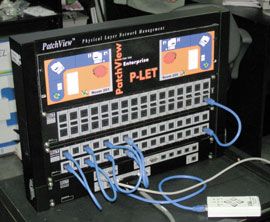 | Рис. 1. Демонстрационная коммутационная панель PatchView с пультом дистанционного управления.
|
Коммутационные панели выпускаются для категорий 5е и 6 (Smart и Smart-Giga) в конфигурации на 16, 24 и 32 разъема (рис. 2). Каждый порт панели оснащен светодиодным индикатором и датчиком подключения/отключения шнура. Индикаторы могут быть выключены, включены либо мигать. Последнее происходит обычно при неправильных соединениях. Панели выполнены по технологии "двойной презентации" и допускают внутреннюю перекоммутацию портов, расположенных друг над другом, с помощью специальных переключателей, что позволяет уменьшить количество коммутационных шнуров.
| 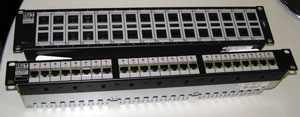 | Рис. 2. Коммутационные панели PatchView категорий 5e и 6.
|
Коммутационные шнуры для системы PatchView в дополнение к обычным восьми информационным проводам оснащены еще двумя, один из которых непосредственно передает сигнал о замыкании/размыкании контактов, а другой пока не используется. Разъем полностью соответствует стандартному RJ-45. В случае крайней необходимости можно воспользоваться и обычными коммутационными шнурами любого производителя, но PV4E не будет регистрировать такие соединения. Существуют также специальные накладки с индикаторами и контактными группами для превращения обычных панелей (производства RiT) в интеллектуальные (рис. 3). В этом случае придется воспользоваться также нестандартными коммутационными шнурами со специальными дополнительными контактами зубовидной формы.
| 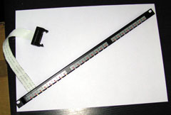 | Рис. 3. Накладка превращает обычную коммутационную панель RiT в интеллектуальную.
|
Коммутационные панели подключаются к анализатору (сканеру) специальным кабелем. Сканер располагается в одном шкафу с панелями и может соединяться с другими сканерами через интерфейс RS-485 (на расстоянии до нескольких километров), а с локальной сетью и станцией администратора - по Ethternet 10Base-T. Один сканер, в зависимости от модели, может обслуживать пять или десять коммутационных панелей. Обычно сканер управляется дистанционно с консоли администратора, но для удобства можно использовать и переносной пульт, который подключается непосредственно к сканеру. Как правило, сканер работает в автоматическом режиме, периодически опрашивая все соединения СКС и передавая полученную информацию на рабочую станцию администратора по протоколу SNMP. Кроме локальной сети, он может также передавать информацию по модему или через интерфейс RS-232.
ПО PV4E функционирует на ПК в среде Windows и построено в архитектуре клиент-сервер, в качестве основы для базы данных о соединениях используется СУБД Microsoft SQL. В настоящее время поставляется версия 3.0, готовится к выпуску полностью локализованная версия 3.3. В состав PV4E входят система P-LET (Proactive LAN Equipment Topology), отвечающая за автоматическое обнаружение и инвентаризацию всех сетевых ресурсов (включая, например, SNMP-коммутаторы, принтеры, IP-телефоны и различное пользовательское оборудование), а также CAD-модуль, реализованный на основе Autodesk MapGuide, который графически отображает структуру сети с привязкой к плану здания. Допускается детализация и вывод информации в любом масштабе, начиная от отдельного порта, панели, шкафа до этажа и здания в целом. Более того, можно планировать переключения в графическом виде, и они затем автоматически преобразуются в задания для администратора, сопровождающиеся текстовыми пояснениями и светодиодной индикацией на панелях.
Информация о состоянии кабельной системы и о переключениях отображается в различных окнах (рис. 4). В частности, возможен вывод на экран в графическом виде любого канала или тракта, все переключения регистрируются в системном журнале, на случай аварийных ситуаций можно создавать резервные копии и рабочие задания для быстрого восстановления работоспособности сети. Поскольку информация о любом переключении в сети немедленно поступает к системному администратору (в частности, может передаваться ему по электронной почте, на мобильный телефон или пейджер), значительно снижается вероятность несанкционированных подключений злоумышленников к сети, а также ошибочных или неквалифицированных действий пользователей или обслуживающего персонала. Дополнительно к кабельной системе PV4E поддерживает до шести типов датчиков, которые могут быть установлены в системах пожарной и охранной сигнализации, вентиляции и кондиционирования и т. д.
| 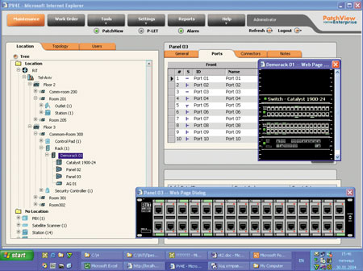 |
| Рис. 4. Графический интерфейс PatchView for Enterprise допускает полную визуализацию всех элементов кабельной системы.
|
Avaya IPatch
В состав этой системы входят четыре типа компонентов: коммутационные панели iPatch, управляющие панели двух типов (Rack Manager и Network Manager) и ПО System Manager.
Коммутационные панели - основа RTCMS iPatch - поставляются в конфигурациях на 24 и 48 портов для СКС категорий 5е и 6 (PowerSUM и Giga Speed соответственно). Они отслеживают подключения и отключения разъемов коммутационных шнуров в портах панели. Каждый порт по сравнению с обычной коммутационной панелью оснащен дополнительно тремя элементами: датчиком подключения коммутационного шнура, светодиодом-индикатором и кнопкой (рис. 5). Функциональный элемент датчика - пластинка, которая при подключении шнура замыкает контакт, что, в свою очередь, регистрируется управляющим модулем. Светодиод при этом изменяет свое состояние (включается/выключается). Возможно и ручное управление светодиодами с помощью кнопок.
| 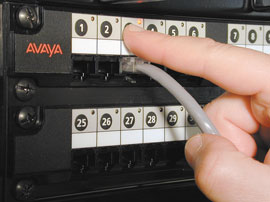 | Рис. 5. Коммутационная панель iPatch оснащена кнопками для включения индикаторов и замыкания контактов.
|
Управляющий модуль нижнего уровня (панель Rack Manager) собирает информацию с 40 панелей iPatch в максимальной конфигурации. Таким модулем оснащается каждая стойка (шкаф) с панелями iPatch. Rack Manager оснащен многострочным текстовым ЖК-дисплеем (рис. 6), куда выводятся информация о соединениях, уведомления о возникших проблемах, подсказки администратору при выполнении перекоммутаций и другие данные. Интерфейс реализован в виде команд и меню. Информацию с панелей Rack Manager (максимум 99 панелей) собирает модуль Network Manager, который, в свою очередь, уже на сетевом уровне по протоколу TCP/IP передает данные на компьютер, где установлено ПО System Manager и ведется база данных по всем соединениям корпоративной сети. Оба модуля, Rack и Network, выполнены в конструктиве высотой 2U.
| 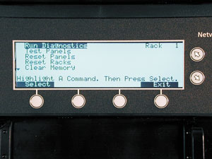 | Рис. 6. ЖК-экран модуля управления системы iPatch.
|
ПО System Manager создает на основе БД карту соединений, которая выводится на экран монитора ПК системного администратора. С помощью System Manager администратор может планировать и отслеживать выполнение рабочих заданий на изменения в кабельной системе и сервисах. ПО System Manager также уведомляет администратора о несанкционированных изменениях в кабельной сети, о необходимости установки нового оборудования и не выполненных в срок рабочих заданиях.
Существуют три типовые конфигурации сети - стандартная, альтернативная и простая. В наиболее распространенной стандартной конфигурации, имеющей вид иерархического дерева (она фактически описана выше), в каждом коммутационном шкафу до 40 панелей iPatch подключаются к управляющей панели Rack Manager (рис. 7). В свою очередь все панели Rack Manager в каждой аппаратной комнате связаны между собой и панелью следующего уровня (Network Manager) через системную шину Rack Manager. В этой конфигурации ПО System Manager может использоваться для передачи запланированных рабочих заданий по перекоммутации на панели iPatch в каждой аппаратной комнате.
| 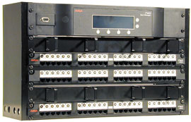 | Рис. 7. Демонстрационная коммутационная стойка iPatch.
|
Альтернативная конфигурация отличается от стандартной тем, что панели Network Manager объединяются между собой по интерфейсу EIA RS-485, и только центральная панель Network Manager подключается к модулю (ПО) System Manager на станции администратора через сеть TCP/IP. В простой конфигурации, в свою очередь, все панели Rack Manager объединяются по RS-485, а модули Network Manager и System Manager могут отсутствовать. Такой вариант позволяет только отслеживать соединения и уведомлять администратора о проблемных ситуациях в аппаратной комнате, но не автоматизировать выполнение операций перекоммутации.
Новый хозяин SystimaxКабельная система Systimax компании Avaya давно стала признанным лидером мирового рынка. В России положение этой торговой марки особенно прочно: по некоторым данным, ее доля доходит до 30% от всего объема российского рынка СКС. По итогам 2003 г. общий оборот подразделения Avaya Connectivity Solution (ACS), которое занимается разработкой и производством Systimax и других кабельных продуктов, ожидался в размере 542 млн долл. Тем не менее продолжающийся на Западе кризис в телекоммуникационной отрасли и низкая рентабельность бизнеса в кабельной отрасли (ожидаемая чистая прибыль по итогам 2003 г. - около 3 млн долл.), по всей видимости, отчасти стали причинами того, что компания Avaya продала этот бизнес другому крупному игроку кабельного рынка - фирме CommScope (http://www.commscope.com). Причем сделка, объявленная в октябре 2003 г. и вступившая в силу 31 января 2004 г., "оценила" бывшее подразделение Avaya примерно в половину этой суммы - она предполагает 250 млн долл. денежных выплат и 1,8 млн акций CommScope стоимостью около 30 млн долл., а также выплату компенсаций сотрудникам Avaya в размере 65 млн долл. Всего на предприятиях ACS в США, Ирландии и Австралии занято около 2 тыс. сотрудников. По словам президента Avaya Дона Питерсона, продажа кабельного подразделения - очередной шаг в планомерной эволюции компании, ставящей перед собой цель сосредоточиться на IP-телефонии и сервисных услугах. В свою очередь фирма CommScope, крупнейший производитель широкополосного кабеля для гибридных волоконно-оптических сетей (HFC), значительно укрепляет свои позиции и расширяет ассортимент продуктов в области решений для "последней мили". |
iTRACS
Компания iTRACS (http://www.itracs.com), как упоминалось выше, не выпускает собственных кабельных компонентов, и ее решение используется с СКС других фирм. Система iTRACS не привязана к какому-либо типу продуктов и может устанавливаться поверх уже функционирующей кабельной проводки. В ее состав входят сенсорные площадки для коммутационных панелей, специальные коммутационные шнуры с дополнительным девятым проводником и штыревым контактом, анализаторы и ПО.
Сенсорные площадки для установки в существующие СКС изготавливаются на клейкой основе. Их можно заказать любой формы и размера и установить не только на коммутационные панели, но и на активное оборудование (рис. 8). В принципе эту дополнительную "навеску", превращающую обычную СКС в "интеллектуальную", пользователи могут смонтировать на объекте своими силами, но, как правило, надежность таких инсталляций оставляет желать лучшего. Преимущественно используется индустриальный метод: компоненты конкретного производителя СКС оснащаются и комплектуются необходимыми аксессуарами на заводе. Среди стратегических партнеров - производителей СКС, выбравших такой путь, на Web-сайте компании iTRACS перечислены ITT Industries, Molex, Nordx/CDT, Ortronics и Tyco.
| 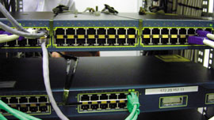 | Рис. 8. Сенсорные панели iTRACS на активном сетевом оборудовании.
|
Рассмотрим более подробно систему AMPTRAC подразделения AMPNetconnect корпорации Tyco International (http://www.ampnetconnect.com), поскольку эта система, пожалуй, наиболее известна на российском рынке по сравнению с другими реализациями iTRACS, а московская фирма "Агентство сетевых технологий" (http://www.nta.ru) участвовала в разработке ПО для AMPTRAC. Коммутационные панели AMPTRAC (рис. 9) выпускаются в конфигурации на 24 и 48 портов, высотой 1U и 2U, для медных СКС категорий 5е и 6, а также оптических разъемов MT-RJ. Можно также заказать набор retrofit kit для модернизации уже установленных панелей. В его состав, кроме непосредственно сенсорных панелей на клейкой основе (с уровнем адгезии Industrial 3), входят специальные накладки для защиты сенсорной полосы и маркировки, скоба для фиксации разъема сенсорной полосы и распорка для прохода полосы между панелью и стойкой.
| 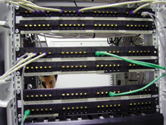 | Рис. 9. Коммутационные панели AMPTRAC.
|
Штыревой контакт коммутационного шнура диаметром 0,72 мм, по информации AMPNetconnect, рассчитан на 10 тыс. циклов переключений и может использоваться не только с медными разъемами RJ-45, но и с оптическими SC, ST, LC и MT-RJ. Гарантия на такие коммутационные шнуры включается в 25-летнюю системную гарантию на СКС АМР. Кроме того, решение iTRACS подходит для реализации кабельных соединений не только по схемам cross-connect (как в системах Avaya и Rit Technologies), но и по схеме inter-connect.
Выпускаются анализаторы двух типов: модуль высотой 1U может контролировать до 256 портов, а модель высотой 6U - от 512 до 2048 портов, в зависимости от количества модулей расширения, которых может быть максимум восемь (каждый рассчитан также на 256 портов). Разрабатывается и более компактный анализатор на 96 портов. Обе модели выпускаются в трех модификациях, рассчитанных на автономную (stand-alone) и совместную работу. В последнем случае до десяти анализаторов подключаются в конфигурации Master-Link (один из них должен быть главным, остальные - ведомыми). Максимальное количество управляемых портов в такой сети достигает 20 480.
И 1U-, и 6U-анализаторы оснащены пятью светодиодными индикаторами состояния и ЖК-дисплеями, на которые выводится информация о соединениях. Расстояние между анализатором и коммутационной панелью может достигать 100 м.
Данные, собранные анализаторами, передаются на компьютер системного администратора по сети TCP/IP. ПО iTRACS работает на обычном ПК под управлением Windows, может использовать СУБД Sybase SQL Anywhere, Oracle 7, Microsoft SQL Server и Microsoft Access, допускает и представление данных в графическом виде (AutoCAD Graphics Engine).
Основные функции ПО - мониторинг соединений в реальном времени (в том числе регистрация и уведомление о несанкционированных действиях в СКС), графическое представление всех кабельных соединений, в том числе с привязкой к архитектурному плану здания, выдача статистических данных по разным критериям (датам, портам и т. п.), генерация заданий на перекоммутацию и отслеживание их выполнения (на панелях и рабочих местах), а также организация управления кабельной сетью через Web-интерфейс из Интернета по защищенному соединению.
ПО поставляется в базовом (Standard Edition) и расширенном (Advanced Edition) вариантах. В базовый вариант входят модули AutoCAD Graphics Engine, SNMP, ODBC, Web и ACCM (Automated Change Control Module), которые обеспечивают перечисленные выше основные функции. В расширенном варианте добавляются модули SDK и API для интеграции iTRACS в системы сетевого управления HP OpenView и CA Unicenter, Remedy и т. п., а также модули iDiscover, VWC и iPBX (рис. 10).
| 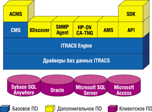 | Рис. 10. Структура ПО AMPTRAC (iTRACS).
|
Модуль IDiscover обеспечивает полную инвентаризацию ресурсов сети (какое оборудование где расположено и куда подключено), а также поиск пользователя или оборудования по заданным адресам и идентификаторам. Он использует информацию из SNMP-управляемых коммутаторов, обнаруживает изменения подключенных к сети устройств, даже если они не активны. С его помощью можно разрешить или запретить доступ к определенным портам, а также автоматизировать вызов охранных служб в случае неавторизованных действий в кабельной системе.
Модуль VWC (Virtual Wiring Closet) реализует простой и удобный интерфейс для навигации, планирования и управления коммутационными узлами, стойками и панелями (рис. 11). Он автоматически создает CAD-файлы, рисует патч-корды в режиме реального времени и подсчитывает их длину. Он может виртуально передвигать оборудование в коммутационном узле, назначать и отменять задания для последующей физической реализации таких изменений.
| 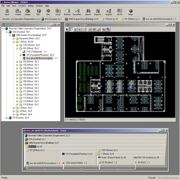 | Рис. 11. Графический интерфейс системы AMPTRAC.
|
Модуль iPBX автоматизирует работу с телефонным оборудованием, он способен находить и отображать состояние телефонов и других голосовых устройств, подключенных к корпоративной сети, а также обрабатывать информацию от любой современной АТС. Данные могут регистрироваться по телефонному номеру, типу аппарата, факса или другого оборудования, а также другим заданным администратором параметрам. Любые изменения, произошедшие в телефонной сети, заносятся в БД iTRACS в режиме реального времени.
Цены
Вполне естественно, что дополнительные возможности и удобства не даются даром. Стоимость RTCMS значительно увеличивает стоимость кабельной системы, особенно при малом числе портов. Так, по данным AMPNetconnect, при числе портов в системе около 100 ее стоимость при использовании AMPTRAC возрастает вдвое, а в системах с 1000 портов относительное увеличение цены составит уже 25% и будет снижаться при дальнейшем увеличении общего числа портов. Как считает компания RiT, для проектов, насчитывающих более 300 рабочих мест, удорожание СКС за счет использования RTCMS (IPLMS) составляет 30-40%.
В абсолютных цифрах при масштабах проекта 250-300 рабочих мест нижняя планка стоимости минимального комплекта оборудования вряд ли опустится ниже 10 тыс. долл. Наиболее дорогостоящие части, вносящие основной вклад в эту сумму, - это анализаторы и ПО. Увеличение цен панелей, разъемов и шнуров вносит менее существенную добавку. Для масштабных проектов (несколько тысяч портов) увеличение стоимости СКС за счет RTCMS может составлять 20%. Это уже вполне приемлемый уровень, адекватный, по мнению крупных клиентов, уровню сервиса, предоставляемому такими системами. Учтем еще такой момент: если 10-15% стоимости проекта, по оценкам компании RiT Technologies, приходится на кабельную систему (короба, шкафы, работа и СКС) и из них 25-30% составляет стоимость собственно СКС (кабели, коммутационные панели, шнуры, розетки), то даже 30-40%-ное удорожание СКС за счет IPLMS в целом увеличивает стоимость проекта всего на 1,5-3%.
Тем не менее пока уделом RTCMS остаются главным образом не слишком многочисленные крупные проекты, и существенных сдвигов ситуации стоит ожидать только после значительного снижения цен на анализаторы и программное обеспечение.